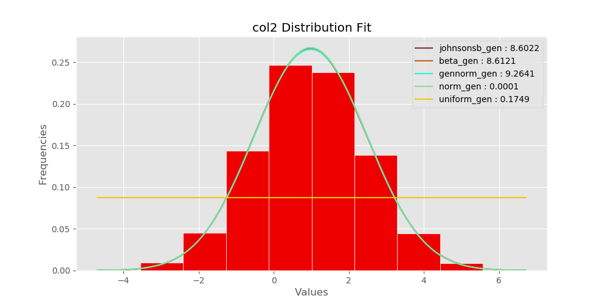
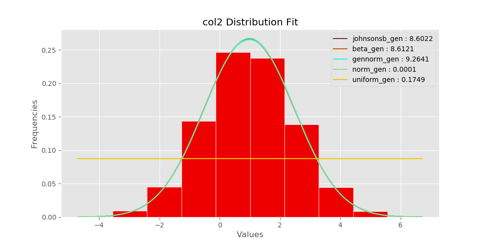

Specifics of each distribution
 

|
Mean: {{ samp_1_mean }} Variance: {{ samp_1_var }} Standard Deviation: {{ samp_1_std }} |
Mean: {{ samp_2_mean }} Variance: {{ samp_2_var }} Standard Deviation: {{ samp_2_std }} |